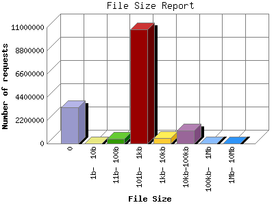

The File Size Report categorizes the size of the file being requested. This can be useful in optimizing site performance. (Remember that on a 28.8Kps modem, it will take on average of 40 seconds to download 100Kb of data.)

| File Size | Number of requests | Percentage of the bytes | |
|---|---|---|---|
| 1. | 0 | 3,453,453 | 0% |
| 2. | 1b- 10b | 434 | 0% |
| 3. | 11b- 100b | 480,399 | 0.7% |
| 4. | 101b- 1kb | 10,826,565 | 10.40% |
| 5. | 1kb- 10kb | 513,686 | 2.88% |
| 6. | 10kb-100kb | 1,201,530 | 66.12% |
| 7. | 100kb- 1Mb | 15,279 | 9.68% |
| 8. | 1Mb- 10Mb | 4,111 | 10.86% |
This report was generated on January 11, 2009 00:22.
Report time frame April 2008, 0 02:34 to November 2009, 0 00:20.